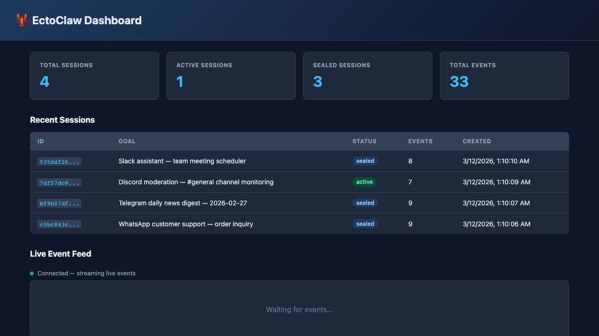

Cryptographic Integrity
SHA-256 chain hashing, Ed25519 signatures, and Merkle roots prove event and session integrity.
EctoClaw captures full agent lifecycles, enforces policy decisions, emits compliance evidence, and ships developer tooling for integration, verification, and operations at production scale.

Core Capabilities
SHA-256 chain hashing, Ed25519 signatures, and Merkle roots prove event and session integrity.
Allow and deny controls, content filters, max-step guardrails, and approval triggers for sensitive actions.
REST API, SSE stream, dashboard views, metrics, and compliance bundles for active governance.
Typed SDK, OpenClaw plugin package, CLI commands, demo scripts, and CI-ready build/test pipeline.
Complete Product Surface
serve, verify, report, sessions, and status.Built for Real OpenClaw Workloads
Generate defensible records for regulated runs without changing agent business logic.
Trace exactly which skill, tool, or model response caused an unexpected action.
Gate sensitive actions by policy and log explicit approval decisions as first-class events.
Produce report bundles with verification material your security and legal teams can review.
Architecture
Events from OpenClaw, the REST API, or the SDK are evaluated by the policy engine, then hashed and signed before being appended to the immutable ledger.
Quick Start
npm install
npm run build
npm test
# start local server
npm run dev -- serve --devNeed full setup guidance and demos? Open the How-to page.
FAQ
No. It adds cryptographic auditability to OpenClaw by recording agent activity as immutable events.
Yes. You can integrate via REST and SDK, use plugin hooks, or run the server and dashboard directly.
No. It is an end-to-end audit platform with policy controls, compliance exports, APIs, SDK, and CLI tools.